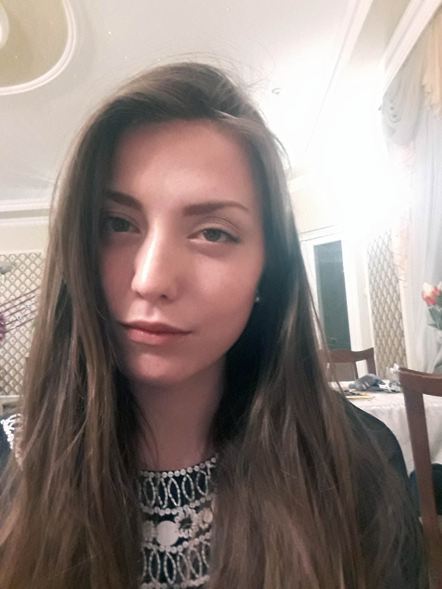

Коляда Ирина Владимировна

Место жительства: г. Запорожье
Мобильный телефон: 0996658274
E-Mail: irina.kolyada5@gmail.com
Проф. навыки:
- знание норм делопроизводства;
- организация совещаний и встреч;
- опыт ведения базы данных;
- 3 года опыта работы с набором студентов (собеседование для выбора специальности);
- навыки деловой переписки, отправки корреспонденции;
- редактирование документов и их регистрация;
- ведение табеля работы сотрудников.
Опыт работы:
- Запорожский электротехнический коледж ЗНТУ Деловод (делопроизводитель) (декабрь 2015 г. - н.в.)
- Запорожский электротехнический коледж ЗНТУ Секретарь директора (август 2015 г. - декабрь 2015 г.
- Салон красоти "Пиар" Администратор (июль 2013 г. - ноябрь 2013 г.)
Образование:
- Запорожский национальный университет (июнь 2018 г.) Филология. Украинский язык и литература (Высшее)
Курсы:
- "Секретарь (1С:кадры)" (январь 2014 г.) Учебное заведение: Запорожский коледж технологий и дизайна. Продолжительность: 3 месяца.
О себе:
Я люблю развариваться и хочу сменить сферу деятельности. Люблю читать, хожу на йогу и плавают на байдарках.